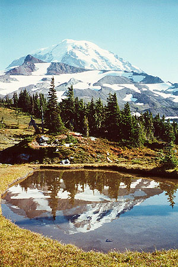
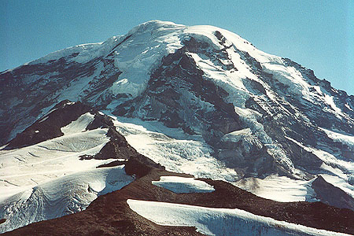
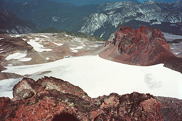
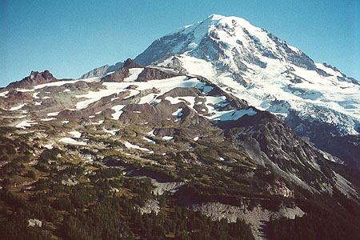

Spray Park
- September, 2000
It was a beautiful day. I tried to figure out where to go for a hike, and suddenly remembered Mt. Rainier: “The place I never go to.” I think it all started when I flew up here for an interview back in 1996. It was my first visit to the area, and I was really excited to see Mt. Rainier. Of course, the month was November, and those of you who live around here know that’s the month for chores, shopping, reading and working! You have almost 0 chance of seeing the sun in the mountains. I drove the Carbon River Road to the mountain, and was stopped in a dismal logging area by a gate across the road. I ended up wandering aimlessly in light snow on logging roads, finally crossing a clear-cut for variety. On hands and knees, I clambered over iced up branches and brambles. It took 45 minutes to travel about 1000 horizontal feet! What was I doing?!? I drove back to the city, and did poorly at the job interview. What a dark and dreary place! I thought. I finally moved here two years later. But only now, 4 years later did I venture back to the north side of Mt. Rainer.




I’d missed quite a lot in that time. \index{Spray Park} Spray Park is very beautiful, and the gentle nature of the terrain there contrasts with the rugged Mountain in a special way. In the parking lot, a guy introduced himself and asked to hike together. We had an enjoyable if somewhat frustrating conversation for the first several miles of “boring forest,” which made the time go by quickly. He took a very dim view of the company where I work, and perhaps insinuated that the only reason I didn’t agree was that I wasn’t old or smart enough to know better. Several times I just wished he would disappear! Finally, the scenery compelled us to lay our differences aside and talk only about the surroundings, which was more fun! We made our way through grass and heather to pumice and snowfields, angling towards the prominent point Echo Rock. We surprised a troupe of ptarmigans, who just made clucking noises, not truly alarmed.
At a high point we parted ways, as he wasn’t prepared for steeper snow. I put on crampons and hiked the icy slopes to the base of Observation Rock. Free of the rather thorny companionship, I felt free and strong under the sun. Moving quickly, I came to a scree ridge, removed crampons and made the final hike to the summit. There was a short scramble section at the very end, on fairly solid basalt. I ate some lunch and admired the Mountain, thinking that a climb of Ptarmigan Ridge wouldn’t be so bad. The glaciers were very broken, corrupted by too much good weather.
I decided to ramble back a different way, wanting to get a closer look at the glacier to the west. I was sure I could navigate back to the trail through the mostly gentle Flett Glaciers.
Coming down from the summit, I headed straight down a scree slope about 300 feet into a basin, then crossed snow to the west, finally coming to a dramatic overlook of an icefall. Here I turned right and headed down a ridge back towards Spray Park. When a steep, icy glacier on my right leveled off a bit, I walked onto it just below the only obvious crevasse. Walking down steeper slopes, I eventually came to a dirty-looking unnamed lake. I paused to remove crampons, then continued on snow and rock to gradually friendlier terrain. I decided to climb Hessog Rock, which was directly in front of me across Spray Park. A way trail led me through tarns to the main trail, where a small family sat on a rock admiring Rainier. I spoke to the father, but with a high shriek, he gathered wife and child and scurried to the underbrush.
Soon I was climbing again on steep switchbacks on a grassy slope. I came to a saddle with snow, then followed my nose westward for the summit. Hessog Rock is a series of basalt cliff towers which look quite rotten. Going around the back, I followed a way trail through rock, snow, brush and tree-limb to the summit. This was an excellent viewpoint, really the best in a long day of excellent views. The whole progression from deep forest, to alpine parkland, to snow-dappled moraines, to permanent glacial ice was laid out like a triptych. Add a few peasants and Bosch-like devils for a very mystical vision.
Well, I supposed it was time for my ramble to come to an end, so I reluctantly pieced my way down to the saddle, then back to the main trail. The descent went quickly, until I came to the long almost-level portion of the trail. This felt pretty tedious, but finally I reached the parking lot.
Only a month later, this entire area was covered in snow, although the road was still drivable.